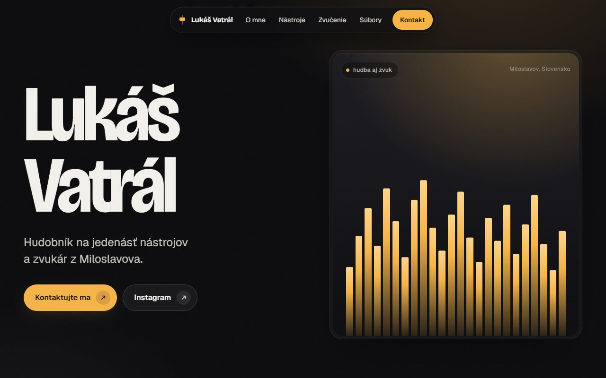

Zákazka pre klienta · prezentačný web
Lukáš Vatrál — hudobník a zvukár
Web hudobníka na jedenásť nástrojov a zvukára z Miloslavova: na čom hrá, kde hráva, ozvučenie svadieb, plesov a koncertov a kontakt. Jedna stránka bez cudzích skriptov, hotová a spustená v septembri 2026.